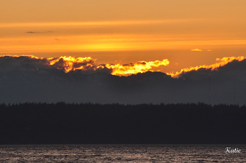
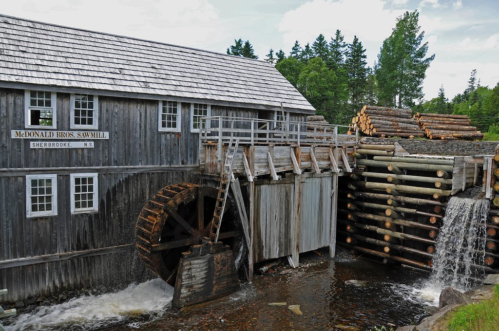
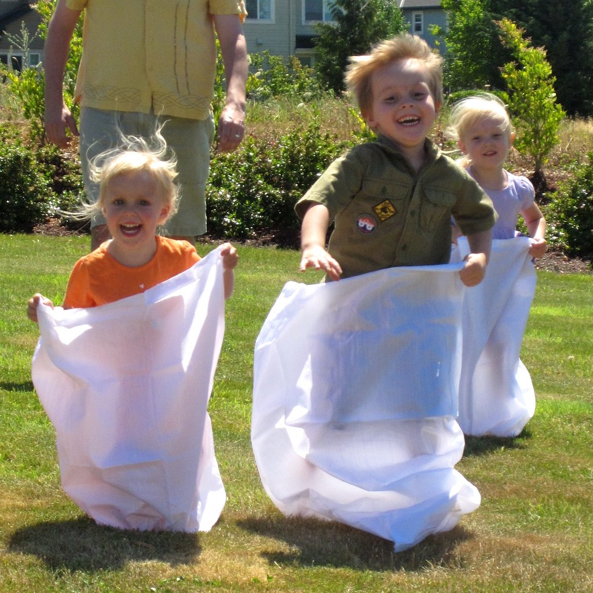

Celebrate the summer solstice for a day of fun at Majorville’s Woodward Farm to celebrate the 150th anniversary of the founding of Majorville! Our theme this year is lumberjacks. Who: Chamber of Commerce in Majorville, Michigan What: Summer Solstice Festival Where: Woodward Farm in Majorville, MI When: Thursday, June 20, 2024 from 11am-10pm
"Summer Solstice Sunset" by mikeyskatie is licensed under CC BY-SA 2.0 


Following the U. S. Civil War, the veterans returned home, and John Major settled with his wife Julia and daughter Anna in Northern Michigan. Dr. Arthur O’Leary, a distinctive looking man of Irish descent. He began buying up large tracts of forest and made plans to build a sawmill. Daniel Thomas and William Woodward built a dock on John Major’s property on Lake Michigan, just north of Pine Creek. The sawmill was built on the south side of Pine Creek not far from Lake Michigan. The mill was connected to the dock with an elevated roadway A boarding house was built south of the mill, and horse barns were built north of the creek. The town of Majorville was established. Majorville is located on Lake Michigan where Pine Creek empties into Lake Michigan just south of Esky Road.
"DSC_5690 - McDonald Bros. Sawmill" by archer10 (Dennis) is licensed under CC BY-SA 2.0 

 .
.
Live Music by Breathe Owl Breathe Wagon Rides Flower Crown making Flower press Food Trucks: Pigs Eatin’ Ribs, Daily Blend, Good on Wheels, TC Pizza Company, and more! Games Crafts Sack Races Scavenger Hunt Bonfire with S’mores U-Pick Strawberries Children’s and pet’s costume contest Outdoor yoga Farm animal petting zoo (goats, sheep, pony, rabbits) Baseball demonstrations by the Majorville Lumberjacks Lumberjack Competitions: chopping, sawing, and speed pole climbing Blacksmithing demonstration by Dan Nickels Enjoy lemonade , lemonade slushies, ice cream, and other goodies from our local vendors. We will also have food trucks on-site for you to enjoy during our celebration. Pigs Eatin’ Ribs: https://www.pigseatinribs.com/food-truck Daily Blend: http://dailyblendtc.com/ Good on Wheels : https://mynorth.com/at_biz_dir/good-on-wheels/ TC Pizza Company: https://traversecitypizzaco.com/ This is a festival designed to highlight our town and what it has to offer the general public, so costumes are encouraged! Let your kiddos get dressed up as a lumberjack, pioneer, or summer solstice sprite.
"Sack race joy squared" by andrechinn is licensed under CC BY 2.0 
 .
.